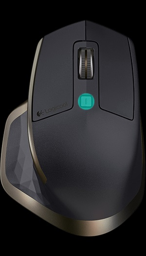

速度対応型スクロール ホイール
SmartShift™ を有効にすると、速度対応型スクロール ホイールが、ユーザーのタッチに反応して 2 種類のスクロール モード間で自動的に切り替わります。
- クリック ツーク リック（ラチェット）モード — アイテムやリストの精確な操作に適しています。
- 超高速（フリースピン）モード — 摩擦のほとんどないスピンにより、長いドキュメントやウェブページをスムーズにスクロールできます。
スピンして
|
ブレーキをかけ、ゆっくりと回転させて
|


SmartShift を有効にする
ポイントとスクロール タブの SmartShift プルダウン メニューから有効を選択します。

SmartShift プルダウン メニューから無効を選択し、SmartShift をオフにします。
SmartShift が無効な場合、スクロール ホイールのスピンやブレーキは現在のスクロール モードでは効果がありません。
モードを手動で切り替える
SmartShift が有効かどうかに関係なく、モードシフト ボタンを押すことで、モード間を手動で切り替えることができます。
デフォルトで、モードシフトは、マウス上部のボタンに割り当てられています。（マウス タブで現在のボタン割り当てを確認してください。）

固定スクロールホイール モードの設定
モードを 1 つのみ使用したい場合、スクロール ホイールを、クリック ツー クリック（ラチェット）または超高速（フリースピン）モードのいずれかに固定することができます。
ポイントとスクロール タブで、固定スクロール ホイール モード プルダウンメニューから、ラチェットまたはフリースピンを選択します。

重要！
SmartShift が無効であり、ならびにモードシフトが MX Master ボタンに割り当てられていない場合にのみ、スクロール ホイール モードを固定することができます。
固定スクロール ホイール モードの有効化
- SmartShift プルダウン メニューから無効を選択します。
- マウス タブで、強調表示されたモードシフト ボタンをクリックし、モードシフト以外のアクションを選択します。
詳細については、MX Master イマージョン ガイドをご覧ください。